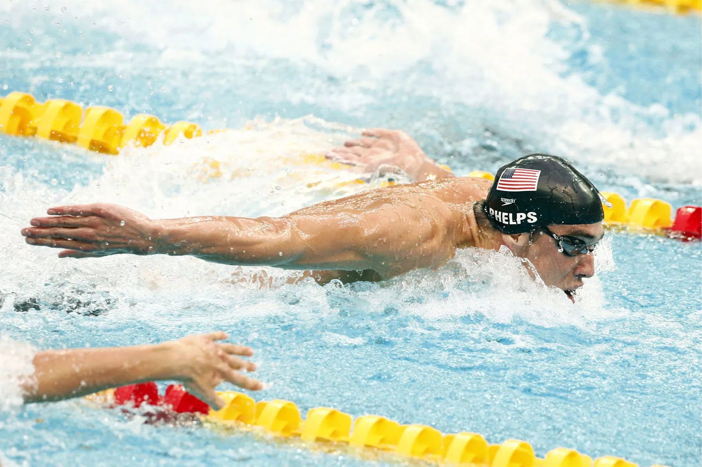

Dobrodošli na najboljšo in najnovejšo stran o plavanju v sloveniji! :) Tukaj spoznate discipline, slavne plavalce in trenerje, ter naše predloge in celo kako delujejo štartni listi!
Raziskujte naše genialne izkušnje in izboljšajte vaše rezultate! Kupite lahko tudi naš merch, tako, da kliknete na to povezavo: MERCH!
